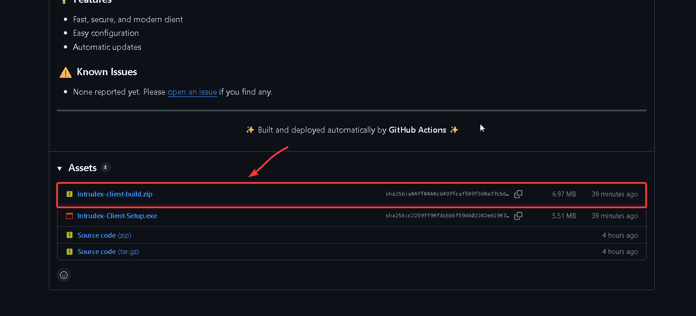

Portable Deployment¶
This guide provides instructions for deploying the Intrudex Client using the portable deployment method, which offers maximum flexibility for custom installation paths, advanced configuration management, and specialized enterprise requirements.
Portable Deployment Overview¶
Portable Deployment Features
The portable deployment method provides complete control over installation paths, configuration management, and service integration, making it ideal for organizations with specific security policies or custom directory structures.
Portable Deployment Benefits¶
- Custom Installation Paths: Deploy to any directory structure
- Manual Configuration Control: Full control over all configuration parameters
- No Registry Dependencies: Minimal system footprint
- Portable Execution: Run from removable media or network shares
- Service Integration Options: Choose how to integrate with Windows services
- Advanced Security Configuration: Custom security policies and permissions
graph TB
subgraph "Portable Deployment Process"
A[Download Portable Package]
B[Extract to Target Directory]
C[Custom Configuration]
D[Service Registration]
E[Validation Testing]
end
A --> B
B --> C
C --> D
D --> E
style A fill:#3498db
style B fill:#f39c12
style C fill:#e74c3c
style D fill:#27ae60
style E fill:#9b59b6System Requirements¶
Minimum Specifications¶
- Operating System: Windows 10 (Build 1809+) / Windows Server 2016+
- Memory: 100 MB RAM available
- Storage: 100 MB free disk space (including logs and configuration)
- Network: HTTPS connectivity to Intrudex Server
- Permissions: Administrative privileges for service registration
Advanced Requirements¶
- PowerShell: Version 5.1 or later (for advanced scripting)
- Windows Management Framework: 5.1 or later
- Microsoft Visual C++ Redistributable: 2019 or later
Download and Extraction¶
Step 1: Download Portable Package¶
Download the latest portable package from the official repository:

Step 2: Extract to Target Directory¶
Extract the portable package to your desired location:
Extract the Portable Package¶
# Define target directory
$TargetDirectory = "C:\Intrudex/Intrudex-Client"
$ZipPath = "Downloads\Intrudex\Intrudex-Client.zip"
# Create target directory if it doesn't exist
if (-not (Test-Path $TargetDirectory)) {
New-Item -ItemType Directory -Path $TargetDirectory -Force
}
# Extract portable package
Expand-Archive -Path $ZipPath -DestinationPath $TargetDirectory -Force
# Verify extraction
Get-ChildItem -Path $TargetDirectory
# Define target directory
TARGET_DIR="$HOME/intrudex-client"
ZIP_PATH="$HOME/Downloads/Intrudex-Client.zip"
# Create target directory if it doesn't exist
mkdir -p "$TARGET_DIR"
# Extract portable package
unzip "$ZIP_PATH" -d "$TARGET_DIR"
# Verify extraction
ls -l "$TARGET_DIR"
# Define target directory
TARGET_DIR="$HOME/intrudex-client"
ZIP_PATH="$HOME/Downloads/Intrudex-Client.zip"
# Create target directory if it doesn't exist
mkdir -p "$TARGET_DIR"
# Extract portable package
unzip "$ZIP_PATH" -d "$TARGET_DIR"
# Verify extraction
ls -l "$TARGET_DIR"
Configuration Management¶
Step 1: Primary Configuration¶
Configure the main client settings config/client_config.json and config/sigma_config.json:
{
"sysmon_exe_path": "assets/Sysmon64.exe",
"sysmon_config_path": "config/sysmonconfig-export.xml",
"sysmon_url": "http://your-server.domain.com/api/logs/sysmon/",
"application_url": "https://your-server.domain.com/api/logs/application",
"security_url": "http://your-server.domain.com/api/logs/security",
"system_url": "http://your-server.domain.com/api/logs/system",
"system_event_log_source": "System",
"application_log_source": "Application",
"security_event_log_source": "Security",
"event_log_source": "Microsoft-Windows-Sysmon/Operational",
"event_filter": "*[System[(Level=4 or Level=0)]]",
"sleep_interval_ms": 1000,
"log_level": "debug",
"send_events": true,
"http_config": {
"user_agent": "Intrudex Client/1.0",
"content_type": "application/xml",
"use_https": false
},
"default_flag": "background",
"sigma_url": "http://your-server.domain.com/api/logs/sigma",
"sigma_event_log_source": "Security",
"sigma_event_filter": "*[System[(Level=4 or Level=0)]]",
"sigma_sleep_interval_ms": 1000,
"sigma_log_level": "info",
"sigma_rules_dir": "rules/sigma/",
"sigma_config_path": "config/sigma_config.json"
}
{
"api_base_url": "http://localhost/sigma/api",
"headers": {
"X-API-Key": "<Your-API-KEY>",
"Authorization": "<Your-API-KEY>",
"Accept": "application/json"
}
}
Step 3: Sysmon Configuration¶
Configure Sysmon integration:
# Copy and customize Sysmon configuration
$SysmonConfigPath = "config\sysmon_config.xml"
# Download latest Sysmon configuration (optional)
$SysmonConfigUrl = "https://raw.githubusercontent.com/SwiftOnSecurity/sysmon-config/master/sysmonconfig-export.xml"
Invoke-WebRequest -Uri $SysmonConfigUrl -OutFile $SysmonConfigPath -UseBasicParsing
# Verify Sysmon configuration
[xml]$SysmonConfig = Get-Content $SysmonConfigPath
Write-Host "Sysmon configuration loaded: $($SysmonConfig.Sysmon.schemaversion)" -ForegroundColor Green
Service Integration¶
Manual Service Registration¶
Register the Intrudex Client as a Windows service:
# Service registration script
$ServiceName = "IntrudexClient"
$ServiceDisplayName = "Intrudex Security Monitoring Client"
$ServiceDescription = "Intrudex enterprise security monitoring client agent"
$ExecutablePath = Join-Path $TargetDirectory "intrudex-client.exe"
$ServiceArguments = "--background --config `"$(Join-Path $TargetDirectory 'config\client_config.json')`""
# Create service
New-Service -Name $ServiceName `
-DisplayName $ServiceDisplayName `
-Description $ServiceDescription `
-BinaryPathName "`"$ExecutablePath`" $ServiceArguments" `
-StartupType Automatic `
-Credential (Get-Credential -Message "Enter service account credentials (or use LocalSystem)")
# Configure service recovery options
sc.exe failure $ServiceName reset=86400 actions=restart/5000/restart/5000/restart/5000
# Set service to restart on failure
sc.exe config $ServiceName depend= "Winmgmt"
# Start the service
Start-Service -Name $ServiceName
# Verify service status
Get-Service -Name $ServiceName
Advanced Service Configuration¶
Configure advanced service parameters:
# Service security configuration
$ServiceSid = (Get-WmiObject -Class Win32_Service -Filter "Name='$ServiceName'").ProcessId
$ServiceAccount = "NT SERVICE\$ServiceName"
# Grant necessary permissions
$LogDirectory = Join-Path $TargetDirectory "logs"
$ConfigDirectory = Join-Path $TargetDirectory "config"
# Set directory permissions
icacls $LogDirectory /grant "${ServiceAccount}:(OI)(CI)F" /T
icacls $ConfigDirectory /grant "${ServiceAccount}:(OI)(CI)R" /T
# Configure Windows Event Log permissions
wevtutil sl Security /ca:O:BAG:SYD:(A;;0xf0007;;;SY)(A;;0x7;;;BA)(A;;0x1;;;BO)(A;;0x1;;;SO)(A;;0x1;;;S-1-5-32-573)
Write-Host "Service security configuration completed" -ForegroundColor Green
Validation and Testing¶
Step 1: Configuration Validation¶
Validate the client configuration:
# Test configuration file
& "$TargetDirectory\intrudex-client.exe" --config "$TargetDirectory\config\client_config.json" --validate-config
# Test server connectivity
& "$TargetDirectory\intrudex-client.exe" --config "$TargetDirectory\config\client_config.json" --test-connection
# Perform health check
& "$TargetDirectory\intrudex-client.exe" --config "$TargetDirectory\config\client_config.json" --check-health
Step 2: Service Operation Testing¶
Test service functionality:
# Check service status
Get-Service -Name $ServiceName | Format-Table -AutoSize
# Test service start/stop
Stop-Service -Name $ServiceName
Start-Service -Name $ServiceName
# Monitor service logs
Get-Content "$TargetDirectory\logs\intrudex-client.log" -Tail 20 -Wait
Step 3: Integration Testing¶
Test integration with Intrudex Server:
# Test API connectivity
$ApiEndpoint = "https://your-intrudex-server.domain.com/api/logs"
$Headers = @{
"Authorization" = "Bearer your-api-key"
"Content-Type" = "application/json"
}
try {
$Response = Invoke-RestMethod -Uri $ApiEndpoint -Headers $Headers -Method GET
Write-Host "✓ Server connectivity successful" -ForegroundColor Green
Write-Host "Connected clients: $($Response.clients.Count)" -ForegroundColor Yellow
} catch {
Write-Host "✗ Server connectivity failed: $($_.Exception.Message)" -ForegroundColor Red
}
Advanced Deployment Options¶
Batch Deployment Script¶
Create a batch deployment script for multiple machines:
# batch-deploy.ps1
param(
[Parameter(Mandatory=$true)]
[string[]]$ComputerNames,
[Parameter(Mandatory=$true)]
[string]$SourcePath,
[Parameter(Mandatory=$false)]
[string]$TargetPath = "C:\Program Files\Intrudex\Client",
[Parameter(Mandatory=$false)]
[PSCredential]$Credential
)
foreach ($Computer in $ComputerNames) {
Write-Host "Deploying to $Computer..." -ForegroundColor Yellow
try {
# Create remote session
$Session = New-PSSession -ComputerName $Computer -Credential $Credential
# Copy files
Copy-Item -Path $SourcePath -Destination $TargetPath -ToSession $Session -Recurse -Force
# Execute remote installation
Invoke-Command -Session $Session -ScriptBlock {
param($Path)
# Register service
$ServiceName = "IntrudexClient"
$ExecutablePath = Join-Path $Path "intrudex-client.exe"
New-Service -Name $ServiceName `
-DisplayName "Intrudex Security Monitoring Client" `
-BinaryPathName "`"$ExecutablePath`" --background" `
-StartupType Automatic
Start-Service -Name $ServiceName
} -ArgumentList $TargetPath
# Close session
Remove-PSSession $Session
Write-Host "✓ Successfully deployed to $Computer" -ForegroundColor Green
} catch {
Write-Host "✗ Failed to deploy to $Computer`: $($_.Exception.Message)" -ForegroundColor Red
}
}
Group Policy Deployment¶
Create Group Policy deployment package:
# Create Group Policy deployment structure
$GPOPath = "C:\GPO-Intrudex-Client"
New-Item -ItemType Directory -Path $GPOPath -Force
# Create deployment script
$DeployScript = @"
@echo off
REM Intrudex Client Group Policy Deployment Script
set TARGET_DIR=%ProgramFiles%\Intrudex\Client
set SOURCE_DIR=%~dp0Files
REM Create target directory
if not exist "%TARGET_DIR%" mkdir "%TARGET_DIR%"
REM Copy files
xcopy "%SOURCE_DIR%\*" "%TARGET_DIR%\" /E /H /C /I /Y
REM Register service
sc create "IntrudexClient" binPath= "\"%TARGET_DIR%\intrudex-client.exe\" --background" start= auto
sc description "IntrudexClient" "Intrudex Enterprise Security Monitoring Client"
sc start "IntrudexClient"
REM Log deployment
echo %DATE% %TIME% - Intrudex Client deployed successfully >> "%WINDIR%\Temp\intrudex-deploy.log"
"@
$DeployScript | Out-File -FilePath "$GPOPath\deploy.bat" -Encoding ASCII
Write-Host "Group Policy deployment package created at: $GPOPath" -ForegroundColor Green
Network Share Deployment¶
UNC Path Configuration¶
Configure for network share deployment:
# Network share deployment configuration
$NetworkPath = "\\file-server\intrudex-client"
$LocalPath = "C:\Program Files\Intrudex\Client"
# Create symbolic link for network deployment
New-Item -ItemType SymbolicLink -Path $LocalPath -Value $NetworkPath
# Configure service for network path
$ServiceConfig = @"
[Service]
Type=simple
ExecStart="$NetworkPath\intrudex-client.exe" --background --config "$NetworkPath\config\client_config.json"
WorkingDirectory=$NetworkPath
User=NetworkService
Restart=always
RestartSec=10
[Install]
WantedBy=multi-user.target
"@
# Alternative: Create batch script for network execution
$NetworkBatch = @"
@echo off
pushd "$NetworkPath"
intrudex-client.exe --background --config "config\client_config.json"
popd
"@
$NetworkBatch | Out-File -FilePath "$LocalPath\start-network.bat" -Encoding ASCII
Troubleshooting¶
Common Deployment Issues¶
Service Registration Failed
Symptom: Service fails to register or start
Resolution:
# Check service account permissions
whoami /priv
# Verify executable permissions
icacls "$TargetDirectory\intrudex-client.exe"
# Test executable directly
& "$TargetDirectory\intrudex-client.exe" --foreground --verbose
# Check Windows Event Logs
Get-WinEvent -LogName System | Where-Object {$_.Id -eq 7034 -or $_.Id -eq 7031}
Configuration File Not Found
Symptom: Client cannot locate configuration file
Resolution:
# Verify configuration file exists
Test-Path "$TargetDirectory\config\client_config.json"
# Check file permissions
icacls "$TargetDirectory\config\client_config.json"
# Validate JSON syntax
try {
Get-Content "$TargetDirectory\config\client_config.json" | ConvertFrom-Json
Write-Host "Configuration valid" -ForegroundColor Green
} catch {
Write-Host "Configuration invalid: $($_.Exception.Message)" -ForegroundColor Red
}
Server Connection Issues
Symptom: Cannot connect to Intrudex Server
Resolution:
# Test network connectivity
Test-NetConnection -ComputerName "your-server.domain.com" -Port 80
# Test HTTPS connectivity
try {
$Response = Invoke-WebRequest -Uri "https://your-server.domain.com/api/health" -UseBasicParsing
Write-Host "Server reachable: $($Response.StatusCode)" -ForegroundColor Green
} catch {
Write-Host "Server unreachable: $($_.Exception.Message)" -ForegroundColor Red
}
# Check DNS resolution
Resolve-DnsName "your-server.domain.com"
Uninstallation¶
# Complete uninstallation script
Stop-Service -Name "IntrudexClient" -Force
Remove-Service -Name "IntrudexClient"
# Remove files
Remove-Item $TargetDirectory -Recurse -Force
# Remove registry entries
Remove-Item "HKLM:\SOFTWARE\Intrudex" -Recurse -Force
# Remove Windows Event Log entries (optional)
wevtutil el | Where-Object {$_ -like "*Intrudex*"} | ForEach-Object {wevtutil cl $_}
Write-Host "Intrudex Client completely uninstalled" -ForegroundColor Green
¶
# Complete uninstallation script
Stop-Service -Name "IntrudexClient" -Force
Remove-Service -Name "IntrudexClient"
# Remove files
Remove-Item $TargetDirectory -Recurse -Force
# Remove registry entries
Remove-Item "HKLM:\SOFTWARE\Intrudex" -Recurse -Force
# Remove Windows Event Log entries (optional)
wevtutil el | Where-Object {$_ -like "*Intrudex*"} | ForEach-Object {wevtutil cl $_}
Write-Host "Intrudex Client completely uninstalled" -ForegroundColor Green